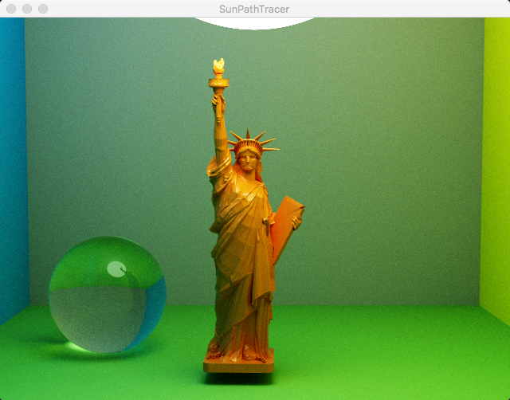
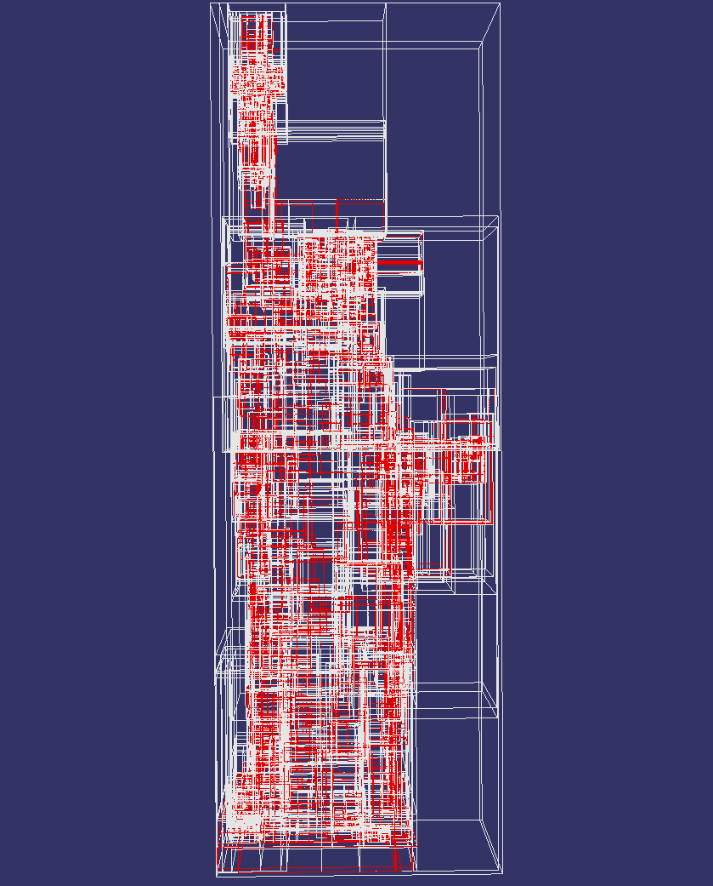

SunPathTracer
CUDA based path tracer
Download .zip
Download .tar.gz
View on GitHub
A CUDA based path tracer
Diffuse shading
Refractive shading
Glossy shading
Smooth layered shading
Triangle mesh support
 
Add IBL
working in progress...